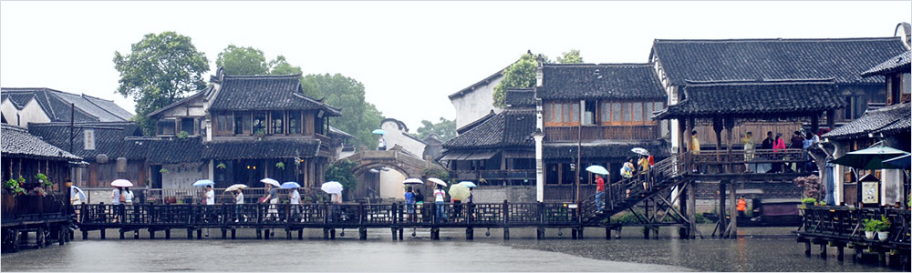

5A级景区-十大历史文化名镇

- 地理位置
- 乌镇位于浙江省桐乡市北端，地处富饶的杭嘉湖平原中心。历史上曾是两省（浙江、江苏）、三府（嘉兴、湖州、苏州）、七县（桐乡、石门、秀水、乌程、归安、吴江、震泽）错壤之地。陆上交通有县级公路姚震线贯穿镇区，经姚震公路可与省道盐湖公路、国道320公路、318公路、沪杭高速公路、申嘉湖高速公路、乍嘉苏高速公路相衔接。乌镇距桐乡市区13公里，距周围嘉兴、湖州、吴江三市分别为27公里、45公里和60公里，距杭州、苏州均为80公里，距上海140公里。镇域面积79平方公里，建城区面积2.5平方公里。
- 四季气候
- 乌镇地处东南沿海，属典型的亚热带季风气候。温暖湿润，雨水丰沛，日照充足，具有冬冷夏热，春暖秋凉，四季分明的特点。年平均气温16.1℃。1月份最冷，月平均气温3.6℃；7月份最热，月平均气温28.1℃；年平均降水量1233.9毫米，全年有3个明显降水时段即4-5月（春雨），6-7月（梅雨），8-9月（秋雨）,冬季会下雪。
- 乌镇年平均日照1842.3小时。一年中春季为78天，夏季为90天，秋季为64天，冬季长达133天。
- 浙江省桐乡市乌镇石佛南路18号
- 0573-88731088|
- 关于我们|